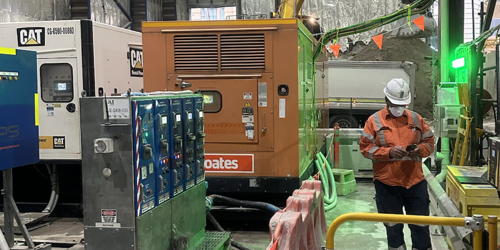
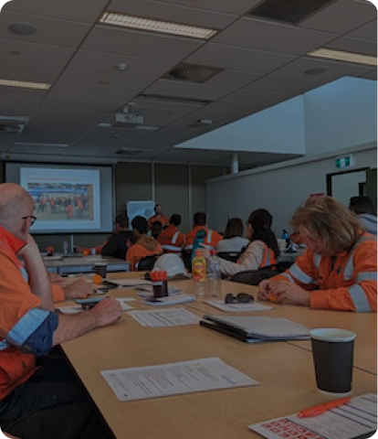
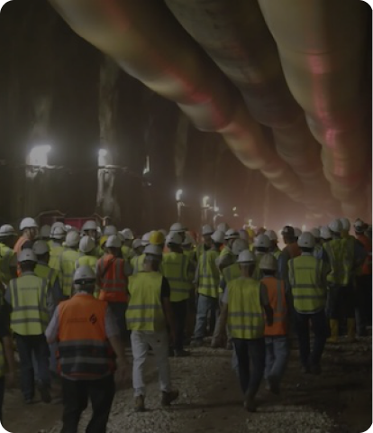
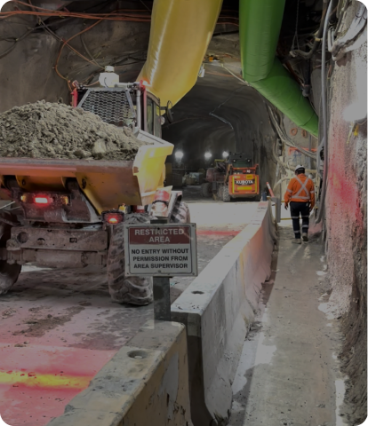
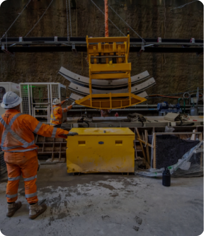
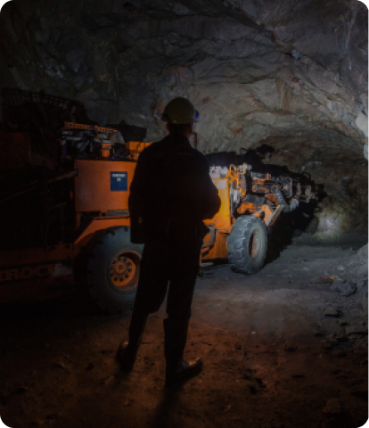

Production Intelligence
Understanding The Factors Influencing Operational Performance
Construction projects generate enormous volumes of information every day.
Production performance is influenced by far more than equipment utilisation alone. Workforce activity, production systems, environmental conditions, material movement and operational constraints all contribute to outcomes. Production Intelligence helps organisations understand these relationships and identify opportunities to improve performance.
Production Starts Long Before Material Is Processed
Production outcomes are influenced by a chain of interconnected activities

Planning

Execution

Material movement

Equipment performance
Workforce activity

Operational conditions
Production Intelligence helps organisations understand these relationships and identify opportunities for improvement.
Rock Fragmentation Intelligence
Fragmentation quality influences downstream production performance
Poor fragmentation can increase:
Production Intelligence helps organisations:
Helping project teams improve daily execution and decision-making
Explore Rock Fragmentation Intelligence